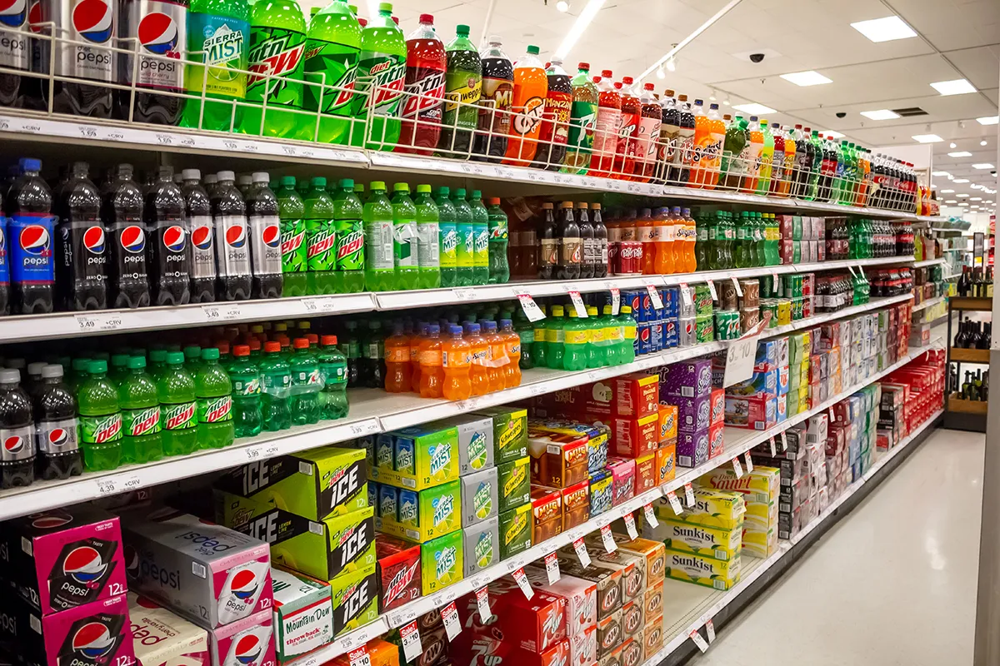
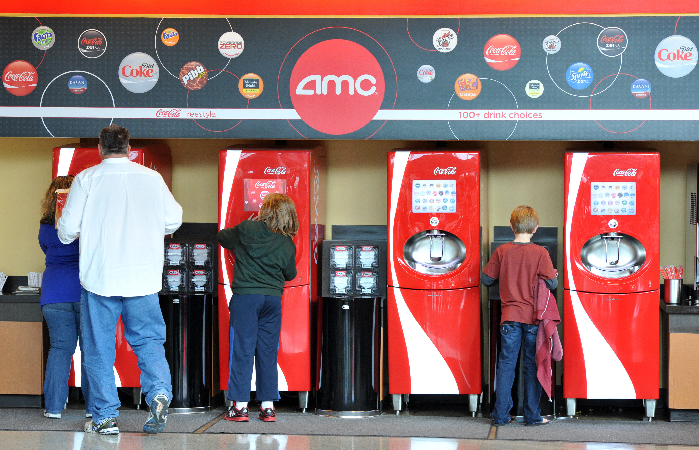
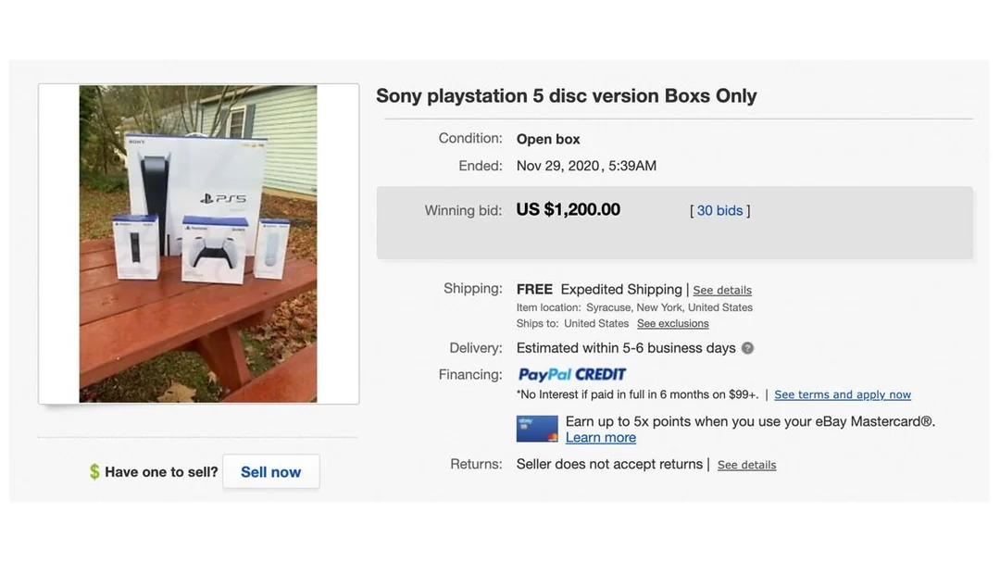
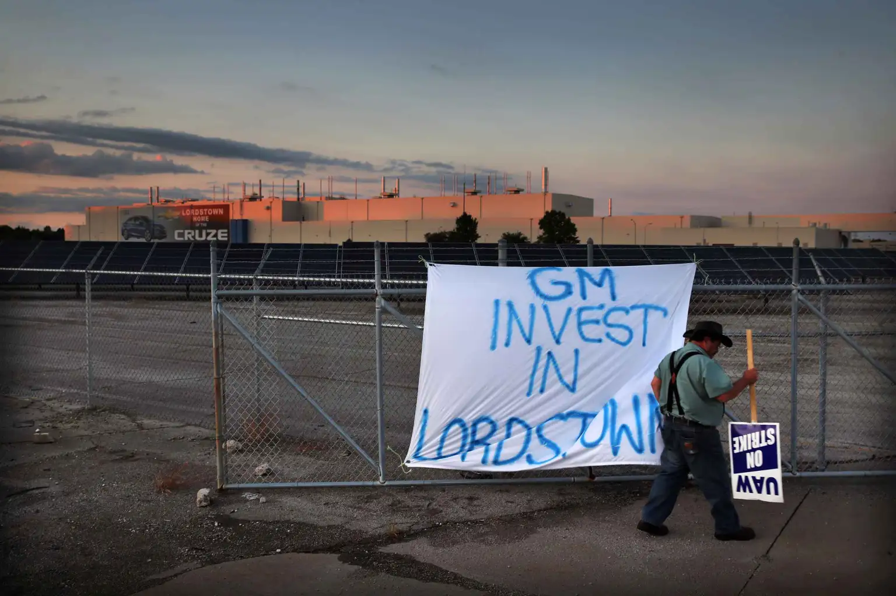
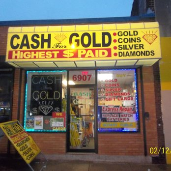
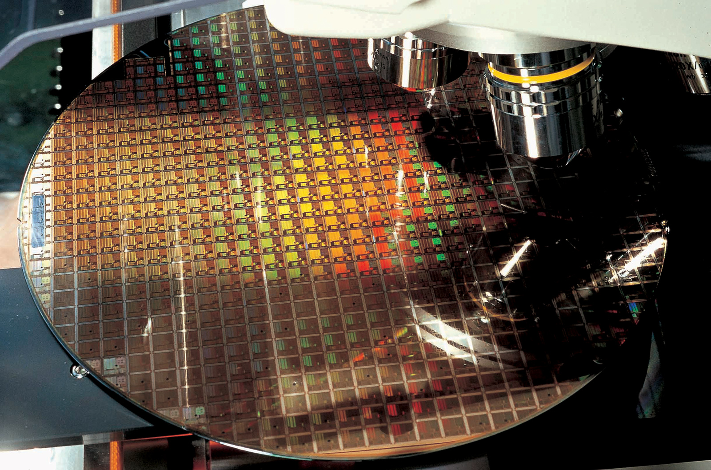

ECON 1116 • Principles of Microeconomics • Chapter 4
Supply, Demand, and Market Equilibrium
Why egg prices tripled, why concert tickets cost $3,800, and why the market always finds its way back.
Dr. Ryan Piao
Department of Economics
Northeastern University
Learning Objectives
4.1
Draw supply and demand curves and identify the
equilibrium price and quantity
4.2
Distinguish between a
shift
in a curve and a
movement along
a curve
4.3
List and explain the
determinants of demand and supply
4.4
Predict how changes in supply and/or demand affect
equilibrium P and Q
4.5
Explain how markets
self-correct
through the price mechanism
Quick Recall (Topics 1–3)
Q1:
What is opportunity cost? One-sentence definition.
Q2:
If the PPF bows outward, are opportunity costs constant or increasing?
Q3:
In Topic 2, I promised you "the most powerful model in economics." What is it?
Today:
We deliver on that promise — supply and demand.
Where Did All the Farmers Go?
Share of U.S. labor force employed in agriculture, 1900–2024 (USDA ERS / BLS).
From 4 in 10 Americans → fewer than 1.5 in 100.
If only 1 in 70 Americans now works in agriculture,
does that mean we have…
Less food?
Fewer farmers should → smaller harvest. Right?
More expensive food?
Scarcer labor should → higher prices. Right?
Hold those guesses. Let’s check the data.
More Food. Cheaper Food. (And More Choice.)
Total U.S. agricultural output (index, 1948 = 100)
U.S. farms produce
~2.8× more
than in 1948 — on less land, with fewer workers.
Food’s share of U.S. disposable income (%)
Americans spend
about half
the share of income on food they did in 1950 — despite huge population growth.
Quick check
And in the store — do we have
less variety
in agricultural products?
Hold that thought — let’s walk a modern aisle.
Two Faces of “More Variety”: Snack Aisle and Tropical Aisle
Snack aisle abundance
Industrial processing turns a handful of raw crops into hundreds of branded products — cheap, shelf-stable, on every shelf.
Tropical, year-round
Cold chains + air freight + lower tariffs mean tropical fruit lives on a Boston shelf in December — unimaginable in 1980.
Tech, scale, trade
— three force multipliers that have run for a century. Today’s chapter is the framework that explains all three.
The Egg Crisis
In early 2025, a carton of eggs went from
$2.50
to
$6.23
— the highest price in recorded history.
Avian flu killed
40 million
hens — 13% of the national flock.
Then, within 18 months, prices fell back to
$2.50
.
By the end of today, you'll be able to explain exactly why.
$6.23
Peak Price
$2.50
Recovery
Section 1
Markets, Prices & Demand
LO 4.1 — Draw demand curves and read them
What Is a Market?
Market
— any arrangement bringing buyers and sellers together to exchange goods, services, or resources.
Competitive market
— many buyers and many sellers, each too small to influence the market price on its own.
Three assumptions behind a competitive market
1. Many buyers + sellers
No single one is big enough to move the market price.
2. Price takers
Buyers and sellers accept the going price — they decide
how much
, not what price.
3. Identical products
Buyers treat the products of different sellers as
interchangeable
.
Prices as signals.
When eggs got scarce, the price told consumers
“find alternatives”
and farmers
“rebuild your flocks now.”
No committee met — the price mechanism did the work.
Six Kinds of Markets — What Counts as the “Price”?
Same supply-and-demand model. Different name for the price.
Goods markets
Gas stations, grocery stores, flea markets.
Price =
$ per unit.
Labor markets
LinkedIn, Indeed, hiring fairs, recruiters.
Price =
wage.
Financial markets
Loanable funds, banks, bond markets.
Price =
interest rate.
Stock exchanges
NYSE, NASDAQ, crypto platforms.
Price =
per-share value.
Currency markets
Foreign exchange (FX) trading.
Price =
exchange rate.
Futures markets
Commodity contracts for later delivery.
Price =
locked in today for tomorrow.
⚡ Electricity — price = $/MWh
Wholesale auctions
run by grid operators (ISO-NE, PJM, ERCOT, CAISO). Generators submit bids — “I’ll supply X MWh at $Y” — stacked low-to-high; everyone accepted gets paid the
highest
cleared bid (uniform pricing).
Day-ahead set 24 h before delivery; real-time re-prices every 5 min. $20/MWh on a mild Sunday → $9,000 during a Texas heat wave.
🎯 Prediction markets — price = probability
Kalshi, Polymarket
— contracts pay $1 if an event happens, $0 if not. The
price
is the crowd’s estimated probability. $0.65 on “Fed cuts rates” → the market gives it a 65% chance.
Jan 2026: $701.7 M traded
per day
. Markets don’t just allocate goods — they aggregate information.
Identical Products Assumption — Where It Holds, Where It Breaks
Buyers treat sellers’ products as interchangeable — so no one seller can charge above the market price. When perception diverges from chemistry, the assumption breaks.
Branded additives are mostly marketing. Drivers pick on price within a few cents — that’s the assumption working.
Where it breaks — aspirin
Identical chemistry: 325 mg of acetylsalicylic acid. Different shelf, very different price.
CVS brand
$1.14
/ 100 tabs
Bayer
$6.29
/ 100 tabs
5× the price for the same molecule. Brand perception lets Bayer set its own price — that’s where the assumption breaks.
When the assumption breaks → market power.
Bayer charges more than CVS-brand because consumers
perceive
them as different products. We formalize this in
Ch 11
(monopoly) and
Ch 12
(monopolistic competition). For Ch 4, we’ll keep the assumption and see how far it gets us.
Willingness to Pay (WTP)
The maximum a buyer will pay for one more unit — the building block of demand.
Willingness to pay (WTP)
— the
maximum
price a buyer would pay for one more unit before walking away.
Two readings of every demand curve.
1. At
price P
→ how much will buyers want?
2. At
quantity Q
→ what is the marginal buyer’s WTP for one more?
Hold this. We use the WTP reading in Ch 5 (consumer surplus = WTP − price).
A pint of strawberries: 5 buyers
Buyer
WTP (max $)
Buys at $4?
Alex
$7
✓ Yes
Beatriz
$6
✓ Yes
Chen
$5
✓ Yes
Devon
$4
✓ Marginal
Esha
$3
✗ Walks
At $4, 4 pints sold. Devon is the
marginal
buyer — her WTP exactly equals the price.
Same Soda. Different WTP.
Your willingness to pay isn’t a property of the product — it’s a property of the
situation
. The market signal (price) reflects WTP
here
, not what the thing is “worth” in the abstract.
Grocery store

A wall of alternatives, brand after brand.
Soda price:
~$1.50 / can
You see Coke, Pepsi, Dr Pepper, generics, sparkling water, juice — one shelf over. Your WTP is
capped by the next-best alternative
. Competition holds price near production cost.
Movie theater

One experience. One bundle. No exit.
Soda price:
~$7.50 / cup
Two hours into a movie, your WTP is anchored to the
experience
— popcorn + drink + film as a complement bundle. And no alternatives to slip out to.
The theater can charge 5×.
Same molecule. 5× the price.
WTP varies with setting — alternatives, complements, mood. Same demand-supply model, different equilibria.
How is the relationship between price and quantity sold?
Demand isn't an assumption. It's an empirical question we test the same way physicists test gravity.
Hypothesis
If prices keep rising, will sales fall?
• Yes → relationship is
negative
• No → relationship is
positive
What’s the
most
you would pay for
🥑
one avocado at the store?
A
Under $1
B
$1 – $2
C
$2 – $3
D
Over $3
Click your answer — the class’s WTP distribution shows on the next slide.
The class’s WTP → the class’s demand curve
Read the bars high-price → low-price.
That’s the
shape
of demand — at $3, only the highest-WTP buyers transact; at $1, almost everyone does.
The textbook’s avocado schedule (next slide) shows the
market
version of what we just measured for the room. Same logic, scaled to thousands of buyers.
The Demand Schedule — Avocados in Boston
Price
Qd (thousands / wk)
$0.50
120
$1.00
100
$1.50
80
$2.00
60
$2.50
40
$3.00
20
Law of Demand:
All else equal, as price ↑, quantity demanded ↓.
Two forces behind every row:
Substitution effect:
Avocados expensive? Switch to hummus.
Income effect:
Budget doesn’t stretch as far — buy fewer.
The right column shrinks by 20k buyers per $0.50 step. The next slide unpacks
why
— the 20k who drop out at each price are the ones whose subjective value falls in that band.
Every purchase is a vote cast by your subjective value.
Subjective Value:
WTP isn’t a property of the avocado. Hosting brunch for 6? You’ll pay $3.50. Just ate guac yesterday? $1 is your max. Jane, who buys avocados weekly, lands at $2.
How that builds the schedule:
At $3, 20k buyers have a high-enough WTP to transact (people like “You hosting brunch”). Drop the price to $2 and Jane joins — 60k. At $1, “You-just-ate-one” joins — 100k.
The Lesson:
The schedule’s 120 → 20 decline isn’t the product changing. It’s individual subjective values stacking tallest-to-shortest.
Movement Along the Curve — Reading the Line
Holding everything else constant
(ceteris paribus)
, the entire line is your prediction tool: pick a price → read off the quantity demanded.
Figure 4.1 — The Law of Demand
Drag the price slider — the dot slides
along
the same demand curve.
Price changes → movement
along the curve. The curve itself doesn’t budge.
Hold everything else fixed
— income, tastes, related-good prices, expectations, # of buyers. That’s
ceteris paribus
.
The line is the prediction tool
— for
any
price in the market, the curve tells you how much buyers will want.
Pro tip — vocabulary trap:
“Quantity demanded”
is a single
point
on the curve — it changes when the price changes.
“Demand”
is the
entire curve
— it only changes when a shifter changes (next section). Mix these up on an exam and you’ll lose points.
Class poll
The price of avocados drops from $2.00 to $1.50.
Consumers buy more avocados. This is:
A
An increase in demand
B
An increase in quantity demanded
C
A decrease in supply
D
A decrease in quantity demanded
Click your answer — results show on the next slide.
Answer: B — an increase in quantity demanded
The price of the good itself changed — that’s a
movement along the curve
to a new point. The curve didn’t shift.
The test:
Did the price of
this good
change? → movement along. Did something
else
change? → the curve shifts. We’ll lean on this distinction for the rest of the chapter.
Section 2
Shifts in Demand
LO 4.2 & 4.3 — What moves the curve vs. moving along it
1. Income ↑ → Demand for
Normal
Goods ↑
Income roughly doubles → vacation trips per year roughly double too. The entire curve shifts right.
Demand for vacations shifts right
Vacations, dining out, organic produce, gym memberships — all normal goods.
Normal good:
income ↑ → demand ↑ (curve shifts
right
). E.g. median U.S. household income rose ~12% real terms 2015–2024 → restaurant + travel spending grew faster than groceries.
1. Income ↑ → Demand for
Inferior
Goods ↓
When income rises, value meals lose customers — budgets shift toward fancier alternatives. The curve shifts left.
Demand for value meals shifts left
Value meals, bus rides, ramen, generic brands, used clothing — classic inferior goods.
Inferior good:
income ↑ → demand ↓ (curve shifts
left
). McDonald’s value-menu visits per household fall as income rises — substituted for sit-down dining.
2. Related Goods — Substitutes
When the price of one good rises, demand for its
substitute
rises. PS5 hikes? Xbox demand climbs.
🎮 PS5 — price rises (movement along)

PS5 price ↑ → PS5 quantity demanded ↓ (move
up
the same curve).
🎮 Xbox — demand shifts right
At every Xbox price, more buyers want one → whole curve shifts
right
.
Direction summary:
P
PS5
↑ ⇒ movement
along
D
PS5
(Q
d
PS5 ↓) | D
Xbox
shifts
right
(Q
d
Xbox ↑ at every price).
2. Related Goods — Complements
When the price of one good rises, demand for its
complement
falls. PS5 hikes? Demand for PS5 games drops.
🎮 PS5 console — price rises
Same movement-along we saw for substitutes — PS5 price ↑ → Q
d
↓.
🕹️ PS5 games — demand shifts left
Fewer PS5 owners → smaller game-buying base → D
games
shifts
left
.
Direction summary:
P
PS5
↑ ⇒ movement
along
D
PS5
(Q
d
PS5 ↓) | D
games
shifts
left
(Q
d
games ↓ at every price).
3. Tastes — Dubai Chocolate
TikTok virality (2024–25) made pistachio-kataifi-filled chocolate a global sensation. Then the trend cooled.
Pistachio prices doubled globally as makers rushed to copy.
Demand: shifts right, then back left
Same product, same price — demand depends on whether it’s
on FYP
this week.
Tastes:
when buyers’ preferences shift, the curve shifts — even with no price change. Viral booms typically pull demand right; fading attention pulls it back.
GLP-1 users eat less. Snacks, sweets, and sugary drinks see demand contract.
🥛 High-protein yogurt — demand shifts right
Smaller portions = need more protein per calorie. Greek yogurt & cottage cheese boom.
One drug class, two opposite shifts.
Estimates: snack-category demand ↓ 8–15% in GLP-1 households; protein dairy ↑ double-digits since 2023 (Walmart, Kroger earnings notes).
Tastes — Previous Semester Examples
Two more viral taste shocks from the 2023–2025 economy. Same pattern: tastes ↑ → D shifts right → both P and Q rise (supply can’t respond fast → resale premiums, knock-offs).
Labubu
Pop Mart blind boxes
— “Monsters” series resells $30–$300+ on the aftermarket.
Global trendy blind-box market:
$2.37B (2024) → $2.51B (2025)
— Global Growth Insights.
TikTok unboxing videos drove the demand curve right; Pop Mart raised prices and added drops to manage queues.
Stanley Cup
40 oz Quencher tumbler
— Stanley brand revenue $73 M (2019) →
$750 M+ (2023)
. That’s
~10×
in 4 years.
2024 Target Valentine’s drop sold out same day; resold
$200+
on eBay vs
$45
retail.
Same physical product as years prior — only tastes changed. Whole demand curve moved right.
Same micro-mechanism, two markets.
Viral taste shock → D shifts right → both P⁎ and Q⁎ rise. Supply can’t keep up → resale premiums + brand knock-offs (Lindt, Trader Joe’s, Costco all chased the Dubai-chocolate trend; off-brand 40 oz tumblers flooded Amazon). The knock-off pattern previews
Ch 13
— monopolistic competition & brand differentiation.
4. Expectations — When the EV Tax Credit Expired
Federal
$7,500
EV credit ended Sept 30, 2025. Buyers pulled purchases
forward
to lock in the savings.
“Buy now or pay $7.5k more in Oct” → whole curve shifts
right
.
↓ After Sept 30
Effective price ↑ $7,500 → move
up
the curve, Q
d
↓.
Expectations of a future price change move demand today.
The Q3 spike isn’t a one-time anomaly — it’s the demand curve responding to an
expected
price hike. Cox Automotive: 9.8% Q3 EV market share, then 5.3% Q4.
5. Number of Buyers
More buyers in the market → demand shifts right. Fewer buyers → demand shifts left.
📅 Sept move-in week, Boston
30,000+ students arrive → futons, microwaves, ramen, Ubers, IKEA runs all see demand shift
right
.
🏭 Local manufacturer closes

Lordstown GM (2019):
1,600 jobs gone → restaurants, haircuts, gym memberships, used-car lots — the
whole local market
shrinks.
Number of buyers
is the slow-moving but powerful shifter — immigration, population aging, regional booms and busts. The demand curve in 2030 will look different from 2025 mostly because the
buyers
are different.
Demand Shifters — Summary
Five shifters, two directions. Anything
other than the good’s own price
that changes how much buyers want.
1
Income
— income ↑ shifts normal goods
right
, inferior goods
left
.
2
Related goods
— P
substitute
↑ shifts D
right
; P
complement
↑ shifts D
left
.
3
Tastes
— viral trends, biological shifts (GLP-1s) can move D either way.
4
Expectations
— expect future P ↑ → D shifts
right
today.
5
Number of buyers
— more buyers
right
, fewer
left
.
Two possible shifts
Any of the 5 shifters can move D₀ in either direction.
The rule:
when something
other than the good’s own price
changes, the
whole curve
shifts. When the good’s own price changes, you move
along
the curve. Mix these up on an exam and you’ll lose points.
The Streaming Wars
COVID lockdowns 2020: demand for streaming shifted
rightward
.
+37M
Netflix subs in 2020
$69
Avg monthly spend (2025)
Which demand shifters?
Tastes
(more time at home),
expectations
(lockdowns last months),
income
(stimulus checks).
Hold the subscription price constant → at the same P, demand shift means more buyers want streaming: Q₁ → Q₂.
The
good’s own price
changed. Curve stays put. You slide to a new point
on the same curve
.
Figure 4.2 — Shift of the curve
Something
other than
the price changed. The
entire curve
moves right or left.
The test:
Did the price of
this good
change? →
Movement along
| Did something else change? →
Curve shifts
Misconception:
“An increase in demand means more people bought it.”
Not necessarily. An increase in demand means the curve shifted right — buyers want more at
every
price.
Section 3
Supply & Shifts in Supply
LO 4.3 — Determinants of supply
The Supply Schedule
Price
Qs (thousands)
$0.50
10
$1.00
30
$1.50
50
$2.00
70
$2.50
90
$3.00
110
Law of Supply:
All else equal, as price ↑, quantity supplied ↑.
Why?
Higher prices make production more profitable → existing sellers produce more, new sellers enter.
The symmetry:
Demand slopes
⬇ down
(higher prices discourage buying). Supply slopes
⬆ up
(higher prices encourage selling).
The Supply Curve — Figure 4.3: The Law of Supply
All else equal, as the price rises the quantity supplied rises — movement
along
the same curve. Drag the price slider to slide the marker up and down the supply line.
Figure 4.3 — Interactive Law of Supply chart (textbook). Same curve, new point as the price changes.
Notice “Cash for Gold” Everywhere?
Back then: just goldsmiths and dedicated gold shops. Now: dry cleaners, pawn shops, laundromats, jewelry kiosks, even check-cashing stores.
New entrant: a dry cleaner
Same shop. Different sideline. A dry cleaner adding “We Buy Gold” to the front window is a
new seller
entering the gold-buying market.
The old guard: dedicated shops

These were already in the market 10 years ago. The
new entrants
(laundromats, kiosks, mail-in services) are layered on top.
Why are so many new sellers entering this market?
Because Gold Itself Got Expensive
The
output price
for these sellers (the spot price they can resell at) more than doubled in 7 years. More profit per ounce → more businesses enter.
Gold spot price:
~$1,200/oz (2018) →
~$2,700/oz (2024-25)
— record highs, more than 2× up.
Central-bank buying
— China, India, Russia stockpiling reserves
Geopolitical risk
— Russia-Ukraine, Middle East tensions, dollar de-risking
Rate-cut expectations
— lower real rates make gold more attractive
Supply of gold-buying services shifts right
More entrants at every price → whole supply curve moves right.
The chain:
gold spot price ↑ → profit-per-ounce of buying + reselling rises → new sellers (cleaners, kiosks, pawn shops) enter the gold-buying market →
supply of gold-buying services shifts right
. Pure
#4 Number of sellers
shifter from Section 3.
6 Supply Shifters
1. Input Prices
Costs ↑ → supply shifts left
2. Technology
Better tech → supply shifts right
3. Expectations
Expect P ↑ → hold back now
4. # of Sellers
More sellers → supply shifts right
5. Gov't Policy
Tax → left; Subsidy → right
6. Related Production
Lime prices ↑ → avocado supply ↓
Same rule applies:
Price of this good changes → movement along. Anything else → curve shifts.
1. Input Prices — the Strait of Hormuz
Iran threatens to close the Strait of Hormuz → shipping & insurance costs spike → oil refiners, plastics, fertilizers all see input prices jump → supply curve for those goods shifts LEFT.
🚢 Hormuz ships index
~20% of global oil and 25% of LNG transits Hormuz. Even a
threat
of closure spikes tanker insurance from ~0.1% to 2%+ of hull value. Crude futures jumped $8–$15/bbl on each escalation in 2024–25.
Supply shifts left
At every price, refiners and shippers offer LESS → whole supply curve moves left.
Input prices ↑ ⇒ supply shifts left.
Higher costs for crude, freight, or insurance compress margins; firms cut output at every price. Same mechanism: wages ↑ (labor input), fertilizer ↑ (farm input), GPU prices ↑ (data-center input).
Labor — the biggest input price
Real US production-worker compensation, 1900–2024 (2024 dollars). When labor input prices rise, supply for every labor-intensive good wants to shift LEFT.
A US factory hour in 1900 cost ≈ $5 in today’s dollars. By 2024 it costs ≈ $36 — roughly
7×
in real terms.
If nothing else changed, supply curves for labor-intensive goods would have shifted
LEFT
over the century.
What kept output growing anyway? →
Technology
(next page).
Labor is an input price like any other.
Wages ↑ ⇒ supply for labor-heavy goods wants to shift LEFT. Whether prices actually rose for consumers depends on whether
technology
(or imports, or capital) shifted supply back RIGHT.
2. Technology — TSMC’s 3 nm node
Better process → more chips per wafer at the same cost. The whole supply curve for cutting-edge silicon shifts RIGHT.
💎 TSMC 3 nm wafer

3 nm vs 5 nm: ~60% more transistor density on the
same
wafer. Apple A17 Pro, Nvidia Blackwell B100, AMD MI300 all rode this node. Same fab, same wafer cost — far more chips.
Supply shifts right
At every price, TSMC and its customers can ship more chips → whole supply curve moves right.
Technology ↑ ⇒ supply shifts right.
Moore’s Law has been a 60-year, structural rightward shift in the chip supply curve. Same pattern: Ford’s assembly line (cars), Bessemer process (steel), Haber-Bosch (fertilizer), generative AI (knowledge work).
Ford Model T (October 1, 1908 to May 26, 1927)
16.5 million Model T cars between 1908 and 1927.
That’s
2,385 Model T sales per day
, every day, seven days a week, 52 weeks a year, for 19 years.
(Drop a Model T photo at figures/model-t.jpg)
';">
Shift in Supply: 1910 → 1924
93 mins per car
→
11–12 cars/min
Price dropped from
$900 (1910)
to
$265 (1924)
$28,635 → $4,865 in 2024 dollars
Car Market
Efficiency vs Equality
The assembly line is a triumph of efficiency. But who absorbs the cost — workers, neighborhoods, the rhythm of a craft? Same supply curve, very different lives.
Why tech matters — wages rose 7× in real terms
Real US production-worker compensation, 1900–2024 (2024 dollars). Labor input price kept rising; supply for labor-heavy goods would have shifted LEFT — except technology shifted it RIGHT faster.
Labor is the biggest input price. Real wages
~7×
since 1900 should have shifted supply LEFT.
Instead prices for cars, food, clothing, electronics all
fell
relative to wages. Why?
Technology shifted supply RIGHT faster than wages shifted it left.
The 20th-century supply-side story:
labor input prices rose, but technology — assembly line, electrification, containerization, automation, software, AI — shifted supply RIGHT even faster. Both forces are real; the net winner depends on the industry.
3. Expectations — the Black Friday laptop you want
Retailers
expect
huge late-November demand at deep discounts. They stockpile inventory and time releases for Black Friday week → supply for that week shifts RIGHT.
🛒 Black Friday laptop deals
Best Buy, Amazon, Walmart all
plan
Q4 inventory in March-April. They’re betting on the November spike. Sellers who guess wrong eat returns and markdowns.
Supply shifts right (BF week only)
Inventory built months ahead floods the market in BF week.
Expectations of future demand ↑ ⇒ supply shifts right today.
Opposite direction is just as common: if a seller expects prices to
rise
next month (e.g., before tariffs hit), they hold inventory back → today’s supply shifts LEFT.
4. Number of Sellers — the Uber driver boom
Uber’s monthly active drivers have nearly doubled since the COVID trough. More sellers in the rideshare market → supply curve shifts RIGHT.
More sellers (drivers) at every price → whole supply curve moves right.
Number of sellers ↑ ⇒ supply shifts right.
Uber drivers, Etsy makers, Airbnb hosts, OnlyFans creators — every gig-economy platform is a structural rightward shift in the supply of its service. Surge prices fall in markets where supply outgrows demand.
5. Gov’t Policy — subsidies
Subsidies pay sellers to produce. Tax credits, direct grants, low-rate loans — all make output more profitable at every price. Supply curve shifts RIGHT. (Taxes do the opposite.)
💵 Federal subsidies
Examples: Inflation Reduction Act EV credits (~$7,500/car), CHIPS Act ($52 B for U.S. fabs), farm bill commodity payments, R&D tax credits, solar ITC.
Supply shifts right (subsidy)
Subsidies lower effective per-unit cost → sellers offer more at every price.
Subsidy ↑ ⇒ supply shifts right.
Tax/tariff ↑ ⇒ supply shifts left.
Policy is one of the few shifters where the direction is a deliberate choice. We’ll see the welfare consequences (deadweight loss, revenue) in Ch 7.
6. Related Production — Outside Options
Sellers have
alternatives
— pistachio acres can grow almonds; lithium goes to EVs
or
grid storage. When the alternative pays more, this good’s supply curve shifts LEFT.
Dubai Chocolate
TRENDING
Movement along S₁:
price rose for an external reason (viral demand) ⇒ Qˢ rises along the
same
curve.
Wonderful Pistachios
BRAND SUPPLY ↓
Wonderful supply S₁ → S₂ LEFT:
growers replant pistachio acres with almonds → fewer raw pistachios in the market → Wonderful packages & ships fewer at every price.
Related production: a sibling good’s price is a supply shifter.
Pistachios ↔ almonds, corn ↔ soybean, EV lithium ↔ grid lithium. Alternative pays more → this supply shifts LEFT; alternative pays less → this supply shifts RIGHT.
2024–25: Four Supply Shocks
🥚
Eggs
Avian flu: 40M hens killed
+149%
🍫
Cocoa
Drought in West Africa
+187%
☕
Coffee
Drought Brazil + rains Vietnam
+70%
🫒
Olive Oil
Spain production −50%
+100%
The pattern:
In every case, demand barely moved. Supply shifted
left
. Price ↑, quantity ↓. When supply recovered, prices fell.
The same model explains all four.
Class poll
Cocoa prices nearly tripled in 2024
after drought devastated farms in West Africa (80% of world supply).
This was primarily:
A
Demand shifted right
B
Supply shifted left
C
Movement along demand curve
D
Both curves shifted
Click your answer — results show on the next slide.
The test:
Did the price of cocoa change because something
else
shifted — weather, costs, or buyer behavior? Weather hit the supply side, so
the supply curve shifted left
. Same demand curve, new equilibrium: higher price, lower quantity.
Section 4
Equilibrium & Comparative Statics
LO 4.1, 4.4, 4.5 — Where the curves cross and what happens when they shift
Bringing Supply & Demand Together
Price
Qd
Qs
Result
$0.50
120
10
Shortage (−110)
$1.00
100
30
Shortage (−70)
$1.50
80
50
Shortage (−30)
≈$1.75
≈70
≈70
⬌ Equilibrium
$2.00
60
70
Surplus (+10)
$2.50
40
90
Surplus (+50)
Equilibrium
= where Qd = Qs. At ≈$1.75, every seller finds a buyer, every buyer finds an avocado. The market
clears
.
Market Equilibrium
Information is the Key
When markets are large and information is transparent, even self-interested individuals produce socially efficient outcomes.
The Movie Theater —
Efficient Outcome
Roughly equal lines — nobody is in charge.
Self-interest:
minimize my own wait time.
Information:
full
— I see every line at a glance.
Result:
rational individuals each picking the shortest line yields the
shortest collective
ticket time. The Invisible Hand
works.
The Traffic Jam —
Inefficient Outcome
Lane-changing — can’t see what’s beyond the car ahead.
Self-interest:
get ahead of the car ahead of me.
Information:
incomplete
— I can’t see the system-level jam I’m causing.
Result:
the same rational behavior
worsens
the jam — everyone slower. The Invisible Hand
fails.
Same self-interest. Same rationality. Different information → different outcome.
🥚
The egg crisis in full:
Avian flu → shortage at $2.50 → price shoots to $6.23 → farmers rebuild flocks → surplus at high prices → price falls back to $2.50. Complete cycle.
Discussion: Concert Pricing
5 min — Think-Pair-Share
Bloom's L4: Analyze
Taylor Swift
Eras Tour: face value $50–$450, average resale on StubHub
$3,801
.
Beyoncé
Cowboy Carter Tour: face value $100–$1,800, some resold for as low as
$35
.
What can you infer about how each team set the initial price relative to what fans would pay?
Hint:
Which artist priced
below
equilibrium (shortage) vs.
near
equilibrium (market clears)?
Debrief: Concert Pricing
Taylor Swift
Face value well
below equilibrium
→ Massive excess demand (shortage)
→ Resale market explodes
Beyoncé
Face value
closer to equilibrium
→ Supply met or exceeded demand in some markets
→ Resale prices fell below face value
Takeaway:
Self-correction in two real markets. Swift’s shortage filled by scalpers; Beyoncé’s near-equilibrium prices cleared without scalper rents.
The 3-Step Method
1
Identify
Which curve shifts?
2
Direction
Right (↑) or Left (↓)?
3
New Equilibrium
What happens to P and Q?
Shift
Direction
Price
Quantity
Demand ↑
→
↑
↑
Demand ↓
←
↓
↓
Supply ↑
→
↓
↑
Supply ↓
←
↑
↓
Applied: The Egg Crisis
Step 1:
Avian flu killed hens →
supply
event
Step 2:
Supply shifted
left
Step 3:
Price
↑
($2.50→$6.23), Quantity
↓
Discussion: Price Gouging
5 min — Open Debate
Bloom's L5: Evaluate
After a hurricane, bottled water and generators spike in price. Some states cap prices with "anti-price-gouging" laws.
Using the S&D model: what happens to the quantity available if prices are capped below equilibrium? Who benefits? Who is harmed?
2. Demand ↓, Supply ↑.
Law of demand + law of supply create the tension that makes markets work.
3. Shift vs. movement is everything.
Price changes → move along. Everything else → curve shifts.
4. Equilibrium = where curves cross.
Surpluses push P ↓, shortages push P ↑. Markets self-correct.
5. Comparative statics is your prediction tool.
Identify the shift, trace the new equilibrium. When both curves shift, one variable is ambiguous.
Exit Ticket
2 min
1.
Name one
demand shifter
and one
supply shifter
that affected a product you actually bought this week. Briefly say which curve shifted and in which direction.
2.
One thing that's still fuzzy from today.
Next time:
Topic 5 — Elasticity.
How responsive are consumers to price changes? (Remember: 60% of streaming subscribers would cancel over a $5 hike.)
Connections
Building On
T1:
Opportunity cost → foundation of demand
T2:
Positive vs normative → price gouging debate
T3:
PPF/scarcity → S&D resolves tradeoffs via prices
Setting Up
T5:
Elasticity — how steep is the curve?
T7:
Price ceilings/floors → the gouging debate formalized